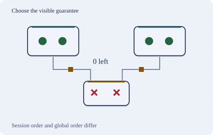

Go deeper · 7 minutes
What consistent really means
Choose the guarantee for each operation and name what a partition changes.
Open this lesson
The balance and the activity list disagree
A transfer succeeds. The balance screen shows the debit, but a refreshed activity list does not. Later, a refresh shows an even older list. These are different failures. A product can need a current balance, read-your-writes on confirmation, and monotonic reads while paging history without demanding the same guarantee everywhere.
Separate time from transactions
Write on client A and read before replication. Read-your-writes carries the writer’s floor. Client B alternates primary and replica reads so monotonic reads have a regression to prevent.
Worked example: nobody is on call
Two doctors each decide to go off call after reading the same snapshot. The writes touch different rows. Watch what row-level conflict checks leave behind.
Partitions and ordinary days
On an ordinary day, stronger reads still pay for coordination, distance or waiting. During a partition, a node cannot both answer every request and guarantee the strongest view. Session guarantees can offer a narrower promise, such as seeing your own save. Define the required observation per operation and explain the degraded behavior instead of choosing one consistency label for the whole product.
A missing reply forces a choice
- Replica cannot catch up: The network may be slow or partitioned. A timeout cannot distinguish them.
- Wait or reject: Preserve the strong guarantee at the cost of availability.
- Serve an older value: Keep a weaker read path available and expose its freshness.
Key numbers
- Write skew outcome
- 0 on call. Two snapshots see 2; each removes a different doctor
- Remote coordination floor
- ≈ 90 ms. 10 ms local path + 80 ms required RTT
- Session catch-up
- ≈ 600 versions. 300 writes/s × 2 s lag; a version token can require waiting
Check your reasoning
Think through these questions before opening the lesson. In the game you can test the idea and compare your reasoning.
- A balance transaction is serializable. What does that alone establish about a later read from an asynchronous replica?
- Why is saying our database is strongly consistent insufficient? Follow-up: choose guarantees for a reservation, save confirmation and public count.
- Both doctors leave under snapshot isolation after reading the other as on call. Which remedy protects the roster invariant?
- Why not make every read linearizable? Follow-up: we have users an ocean away.
- A partition isolates a region from the only seat-allocation authority. There are no preallocated regional rights. Which policy avoids overselling?
The key point
Ask which operation, which order and which failure, then choose the smallest sufficient guarantee.
Practise this idea
- Medium
One-to-one chat
People send short messages to each other from their phones. A message must arrive once, in order, even when the phone is on a bad connection and sends it again. If the other person is offline, the message waits and a notification goes out.
- Medium
Checkout payments
Online shops send you their customers at the moment they pay. You call a card processor, record the order and answer in a couple of seconds. When the processor is slow or down, shoppers refresh and tap Pay again.
- Hard
Bank ledger
You run the system of record for a regional bank: every deposit, withdrawal and card settlement is a posting that must be exact and permanent. Customers in two continents read balances all day, and regulators can ask for proof at any time. A bad day for you is a loss of even one posting.
- Hard
Concert ticket drop
Tickets for a huge tour go on sale at 10:00 sharp. Hundreds of thousands of fans arrive in the same minute, bots arrive earlier, and everyone refreshes when the page stalls. There are 40,000 seats. Sell each one once, charge each buyer once, and keep the site standing.